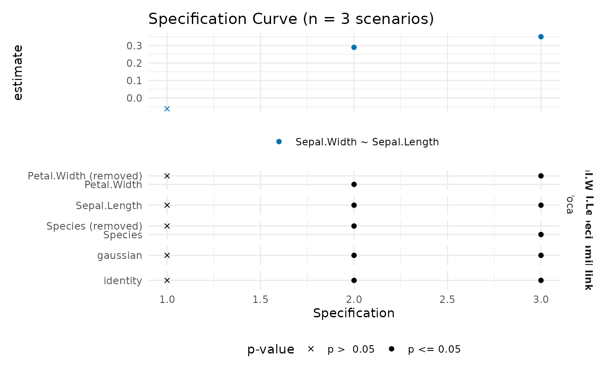
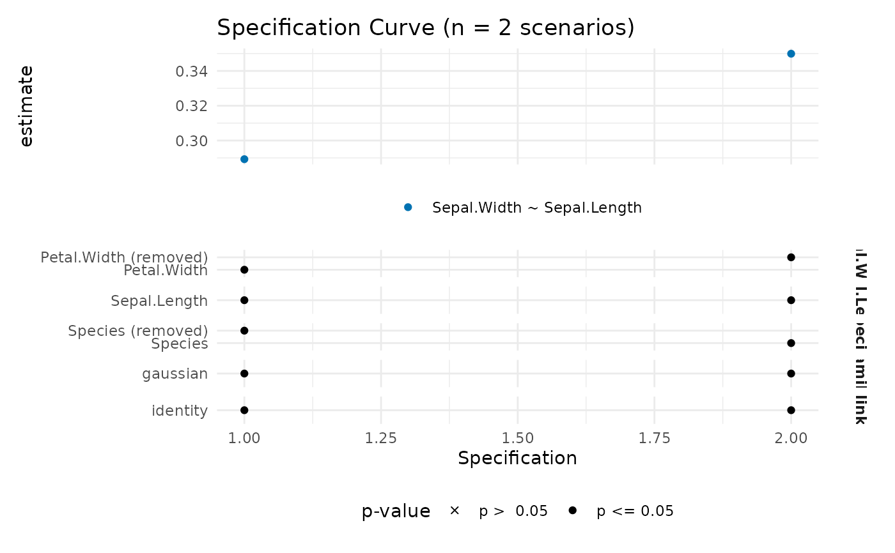

Plots a specification curve: the top panel shows the result of each
specification (sorted), the bottom panel shows the analytical choices
defining it. The plot is built from the table returned by spec_table(),
so it works with pima objects, pima.multi objects, lists of fitted
models, or a (possibly filtered) specification table.
Usage
spec_curve(
x,
focal = NULL,
focal.var = NULL,
yvar = NULL,
p = NULL,
p.adjusted = NULL,
spec_vars = NULL,
exclude.vars = NULL,
alpha = 0.05,
tbr = c(0.4, 0.6),
colors = NULL,
shapes = NULL,
title = NULL,
xlab = NULL,
ylab = NULL,
top.theme = NULL,
bottom.theme = NULL,
redundant = TRUE,
conf.int = FALSE,
facet = NULL,
facet.scales = "free_y",
which.response = NULL,
yname = NULL,
which.plot = "both"
)Arguments
- x
A
pimaobject, apima.multiobject created withfit.specs, a list of fittedlmorglmmodels, or a table returned byspec_table().- focal
A character vector of coefficient names to plot (exact match, e.g.
"log(x)"or"groupB").- focal.var
A character vector of variable names to plot: all the coefficients coming from these variables are selected, whatever their transformation (e.g.
"x"selectsx,log(x)andsqrt(x)) or coding (e.g."group"selectsgroupBandgroupC). When bothfocalandfocal.varare supplied, the union is plotted. When both areNULL, the defaults are the tested coefficients (focal, forpimaobjects), the focal predictors ofcreate_multi()(focal.var, forpima.multiobjects), or all the coefficients except the intercept.- yvar
Character indicating the column of the specification table plotted on the y-axis of the top plot. Defaults to
"estimate"with one coefficient and to"pcor"with more than one.- p
Character indicating the column of p-values used to define significance. Any column of the table can be used. If
NULL, the column is chosen with fixed rules (see Details).- p.adjusted
Logical. For
pimaobjects,TRUEuses the adjusted p-values ("p.adj") andFALSEthe unadjusted flipscores p-values ("p");NULL(default) uses the adjusted ones whenpima()applied a correction and the flipscores ones otherwise. For lists of models andpima.multiobjects the p-values are never adjusted:FALSE(orNULL) uses"wald.p"andTRUEis an error. Ignored whenpis supplied.- spec_vars
Character vector of the specification columns shown in the bottom plot. If
NULL, taken fromattr(x, "spec_vars"). Needed when the attribute has been lost (e.g., aftersubset()).- exclude.vars
Character vector of specification columns removed from the bottom plot (e.g. a predictor such as
"AGE", or"fit_spec").- alpha
A numeric value specifying the significance level for the confidence intervals and the point shapes. Default is 0.05.
- tbr
A numeric vector of two elements indicating the vertical space ratio assigned to the top and bottom plots (e.g.,
c(0.4, 0.6)).- colors
A character vector specifying the colors of the response ~ coefficient combinations. With a single combination the default is
"#0072B2".- shapes
A numeric vector of two elements specifying the shapes for non-significant and significant results. Default to
c(4, 19).- title
A character string for the overall plot title.
- xlab
A character string for the x-axis title. Default to "Specification". The x-axis (the index of the specifications) is shown in the bottom plot, or in the top plot when
which.plot = "top".- ylab
A character string for the y-axis title of the top plot. Default to the value of
yvar.- top.theme
A function returning a
ggplot2theme for the top plot. Default toggplot2::theme_minimal().- bottom.theme
A function returning a
ggplot2theme for the bottom plot. Default toggplot2::theme_minimal().- redundant
Logical. If
FALSE, removes from the bottom plot the choices that do not vary across specifications and those splitting the specifications exactly as a previous one (e.g.,familyandlinkwhen fully determined byfit_spec).- conf.int
Logical. If
TRUE, includes confidence intervals around the estimates (only whenyvar = "estimate"). Wald intervals are used withp = "wald.p"when the standard error is available, otherwise intervals are obtained by inverting the selected p-values.- facet
A formula with columns of the specification table, as in
ggplot2::facet_grid(), splitting the top plot into panels, e.g.response ~ coefficient,response ~ .or. ~ coefficient. IfNULL(default), a single panel. See Details.- facet.scales
Scales of the panels:
"free_y"(default),"fixed","free_x"or"free", as inggplot2::facet_grid().- which.response
A character vector specifying which response variables to include in the plot.
- yname
Deprecated alias of
which.response.- which.plot
One of
"both"(default),"top"or"bottom".
Value
A patchwork object consisting of two aligned ggplot2 plots,
or a single ggplot2 plot when which.plot is "top" or "bottom".
Details
When p is NULL, the p-values are chosen among the three columns
produced by the package, with fixed rules:
pimaobjects (the table has"p"): the adjusted p-values ("p.adj") or, whenpima()applied no correction (method = "none"), the flipscores p-values ("p").p.adjusted = FALSEalways uses"p";p.adjusted = TRUEis an error when there are no adjusted p-values.lists of models and
pima.multiobjects (the table has only"wald.p"):"wald.p", the unadjusted Wald p-values of the model summary.
Other columns (e.g., p-values adjusted by the user) are used only when
passed through p.
The rows are ordered by yvar. The points of the top plot are coloured by
response ~ coefficient (e.g. x and log(x) have different colours),
leaving out the columns used in facet.
With facet, the rows are ordered within each panel. With the bottom plot
(which.plot = "both") each specification keeps its own position on the
x-axis, so that the top and bottom plots stay aligned: the panels are
stacked in rows (one for each combination of the facet columns) and
follow each other on the x-axis. With which.plot = "top" the panels are
laid out as in facet, each with the x-axis of its own specifications.
Whether the values in the same panel are comparable (e.g. the estimates of
x and log(x) with facet = response ~ .) is up to the user.
References
Simonsohn U, Simmons JP, Nelson LD (2020). “Specification Curve Analysis.” Nature Human Behaviour, 4(11), 1208–1214. doi:10.1038/s41562-020-0912-z .
See also
Other specification tables and plots:
spec_scatter(),
spec_table(),
transf_p(),
volcano()
Examples
mods <- list(
a = lm(Sepal.Width ~ Sepal.Length, data = iris),
b = lm(Sepal.Width ~ Sepal.Length + Species, data = iris),
c = lm(Sepal.Width ~ Sepal.Length + Petal.Width, data = iris)
)
spec_curve(mods, focal = "Sepal.Length")

# from a (filtered) specification table
tab <- spec_table(mods, focal = "Sepal.Length")
spec_curve(tab[tab$model != "a", ])

# p-values of your own are used only when requested
tab$p.holm <- stats::p.adjust(tab$wald.p, method = "holm")
spec_curve(tab, p = "p.holm")